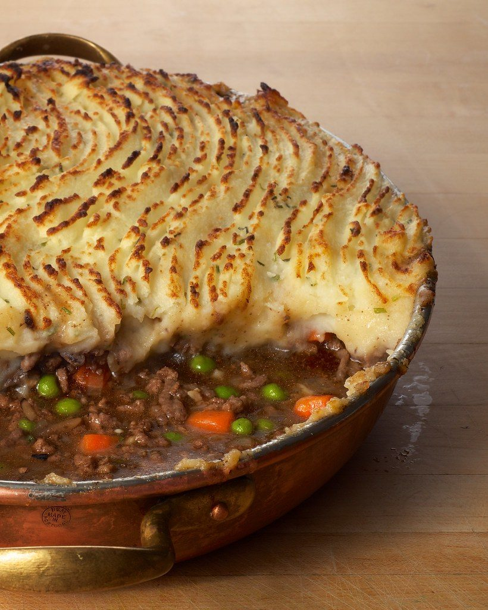
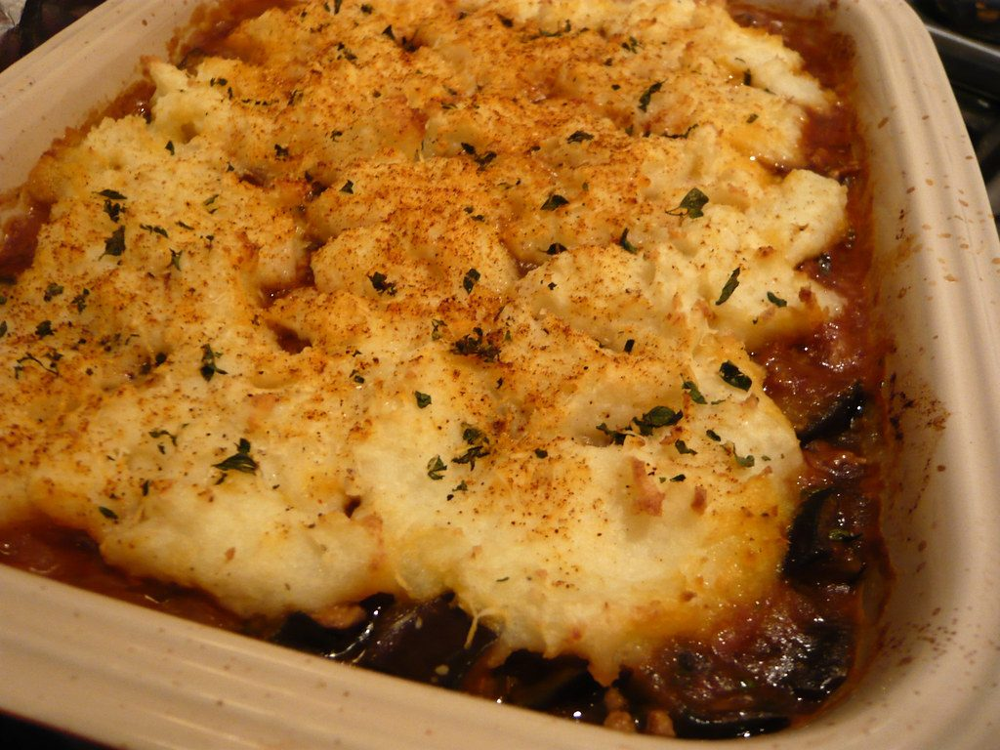
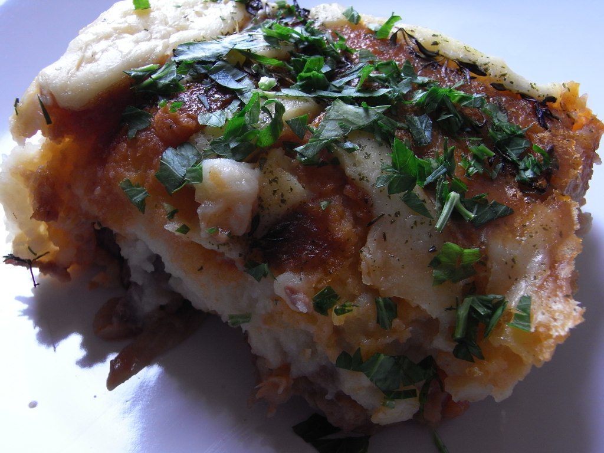
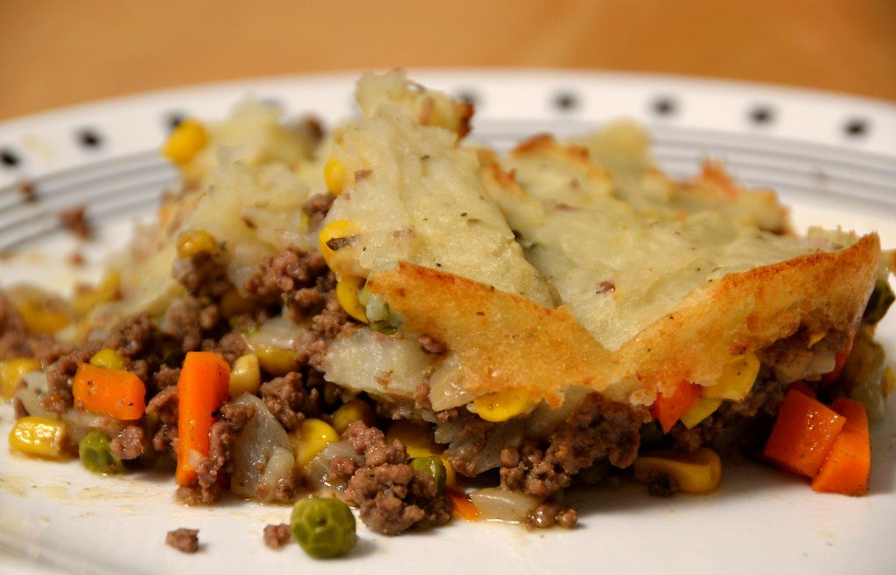
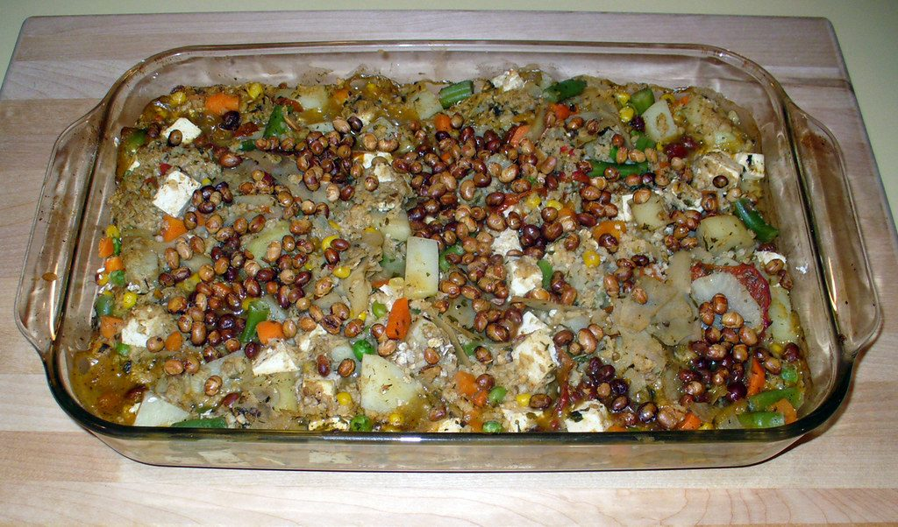
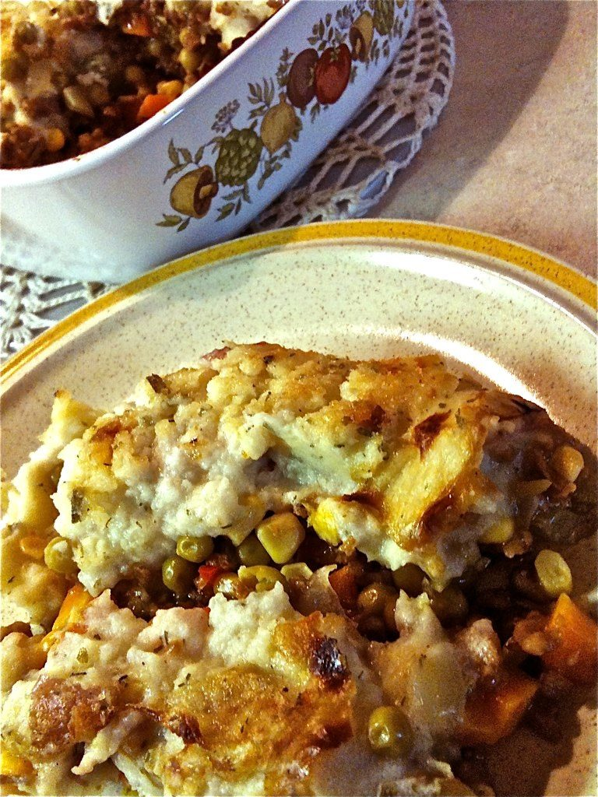
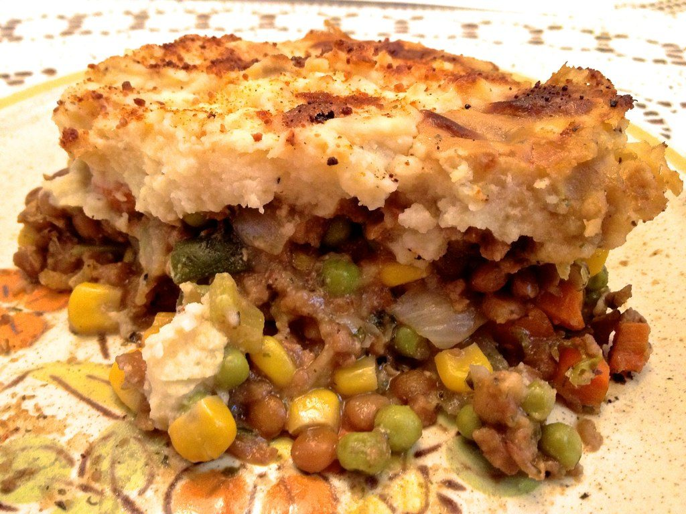

← Comfort Food
Shepherd's Pie
Lamb under a mashed-potato duvet, fork-raked and baked until the ridges go golden. Technically, shepherd's pie means lamb.
Lamb under a mashed-potato duvet, fork-raked and baked until the ridges go golden. Technically, shepherd's pie means lamb.
The pedantry is part of the charm: shepherd's pie is made with lamb (shepherds, see), cottage pie with beef, and the mashed potato on top arrived when the potato became cheap enough to be a crust for the poor. Either way, the formula is one of Britain's best ideas — a deeply savory mince gravy sealed under potato, baked until the fork-raked ridges crisp and brown.
The depth comes from building the filling like a stew: brown the lamb hard in batches, then onions and carrot, a tablespoon of flour, stock, Worcestershire, and — the quiet hero — a tablespoon of tomato paste cooked dark. Simmer until thick enough that a spoon leaves a trail. A wet filling under potato makes a swamp; a nappé filling makes a pie. Peas go in at the end for color and sweetness.
serves 6 — tick items off as you shop; it saves as you go
Every tool this recipe leans on — click any tool for its full story. The whole catalog lives on the Tool Wall.
Boil potatoes from cold salted water, 20 minutes until a knife slides through. Drain, steam-dry 2 minutes, mash with butter and warm milk. Season hard — under-salted mash ruins pies. Fork-rake the surface when topping for maximum crisp ridges.
Hot pan, half the lamb at a time, until deeply browned. Crowding steams it gray. Set aside; leave the fat.
Soften onion and carrot in the lamb fat, 10 minutes. Add tomato paste and cook 2 minutes until it darkens and sweetens — this is the flavor move.
Return lamb, sprinkle flour, stir 1 minute, add stock, Worcestershire, thyme, bay. Simmer 20 minutes until thick — a spoon should leave a clean trail. Peas in at the end. Season, remove bay.
Filling in a baking dish, mash on top in big spoonfuls then spread, fork-rake the ridges, dot with butter. Optional but excellent: a thin layer of grated cheddar over the ridges.
25-30 minutes until bubbling at the edges and the ridges have golden-brown tips. Rest 10 minutes or it will flow like lava and taste of burnt mouth. Serve with extra peas and brown sauce if you know what's good.







Images are web-sourced via image search and self-hosted. Original sources:
CC-licensed images: djwtwo (BY-NC-SA); WordRidden (BY); DesheBoard (BY); trpnblies7 (BY-NC-ND); smiteme (BY-NC); Jeffrey Coolwater (BY-NC-ND); Jeffrey Coolwater (BY-NC-ND).
https://live.staticflickr.com/2455/3583163932_da3a0d56e8_b.jpghttps://live.staticflickr.com/3158/5816841515_386bdbf644_b.jpghttps://live.staticflickr.com/3793/11457181264_dc80ecda14_b.jpghttps://live.staticflickr.com/4039/4184026586_333b194661_b.jpghttps://live.staticflickr.com/4075/4897135759_a6a8e9e324_b.jpghttps://live.staticflickr.com/6231/6311000790_c231ed27c8_b.jpghttps://live.staticflickr.com/8088/8567452924_987a927190_b.jpgVerified working videos — click a card to load the embed.


The dish at a glance — twelve field notes for the collectors.
Powered by GitHub Issues — the backup kitchen. One issue per recipe; your comment lands in the repo.
Slow braised meat, two roofs: crusty bread beside the bowl or a fork-ridged potato lid on top.
If this one works for you, the neighbors probably will too.

golden-topped bakes, spoon-tender insides